Storoff guide
Storoff is a fiction-writing workshop that runs on your computer, with no account and no connection: your stories are files in a folder of your disk. This guide goes through everything the application does, screen by screen. Every screenshot comes from the sample story "Le Dernier Phare". The sample story is written in French, the language of the spell checker shipped with Storoff (others can be added, see Settings).
Contents
- Getting started
- The screen of a story
- Writing a chapter
- Formatting
- The names of the story
- Correcting
- Reading over and reworking
- Writing comfort
- Sheets
- Overviews
- Maps
- History
- The book and the exports
- Settings and files
- Keyboard shortcuts
1. Getting started
My stories
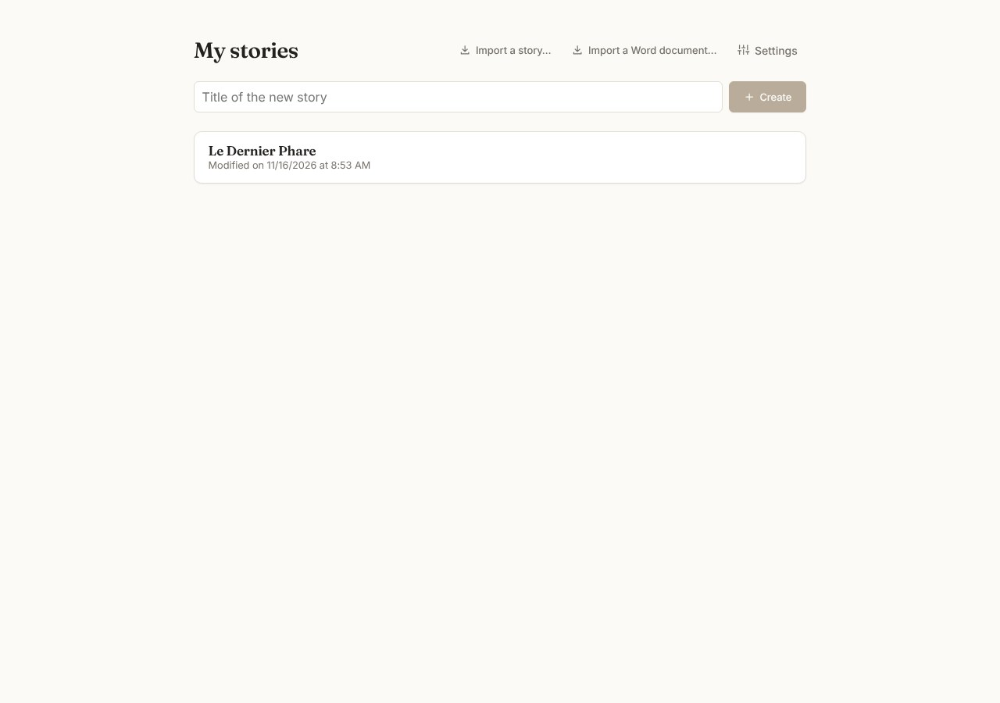
The home screen lists your stories, the most recently modified first. Each story is independent: its chapters, its sheets, its maps and its history.
- Create: type a title in the field at the top, then Enter or "Create". The story opens, ready for its first chapter.
- Rename, Duplicate, Delete: the buttons show when hovering a story. Deleting asks for confirmation and takes the history with it.
- Import a story…: opens a
.storofffile (a whole story exported from Storoff, see Exports) and adds it as a new story. - Import a Word document…: opens a
.docxfile, written by Storoff or by Word, and makes it a new story: chapters, margins, bold, italics, underline, erasures and the manuscript style. When the document was exported from a story still there, Storoff offers to Compare it with that story (see Reimport a Word document); tick "Import it as a new story instead" to make a copy. - Settings: the interface language, the stories folder, the dictionaries (see Settings).
2. The screen of a story
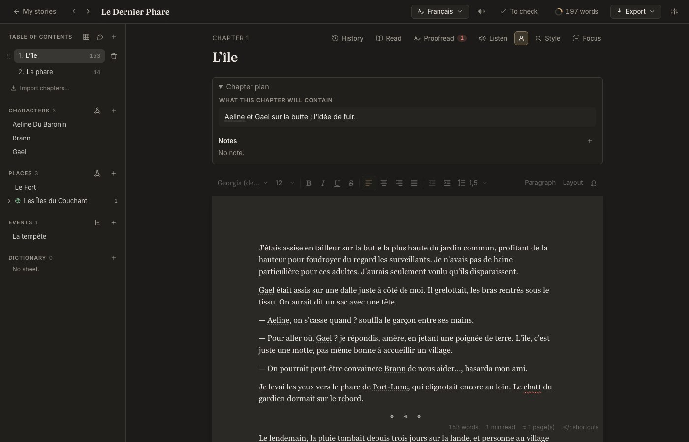
The screen has three areas.
The header, from left to right:
- My stories goes back to the list; the ‹ › arrows go back to the previous or next screen.
- The title of the story, which leads to its home.
- The spell checker language (here "Français"): a menu to choose the dictionary of the story.
- The ambience (the sound wave icon): ambient sounds and typewriter, see Ambience.
- To check: what Storoff's tools noticed in the story, see To check.
- Today's word count (the ring): daily goal, calendar and sprints, see Daily goal.
- Export: the laid-out book, RTF, text, EPUB, whole story.
- The settings (last icon): the settings of the application.
The left panel holds the table of contents and the sheets: characters, places, events, dictionary. Each section has its + button to create, and sometimes an overview button (map of links, timeline). A right click on a sheet offers to delete it.
The main area shows the chapter or the sheet that is open. A sheet opened from the text shows in a side panel, on the right, without leaving the chapter; everything there can be edited.
One side window at a time: the sheet, Proofreading and the Style lens take the same place on the right, and opening one closes the others. Esc closes the one that is open.
The home of the story
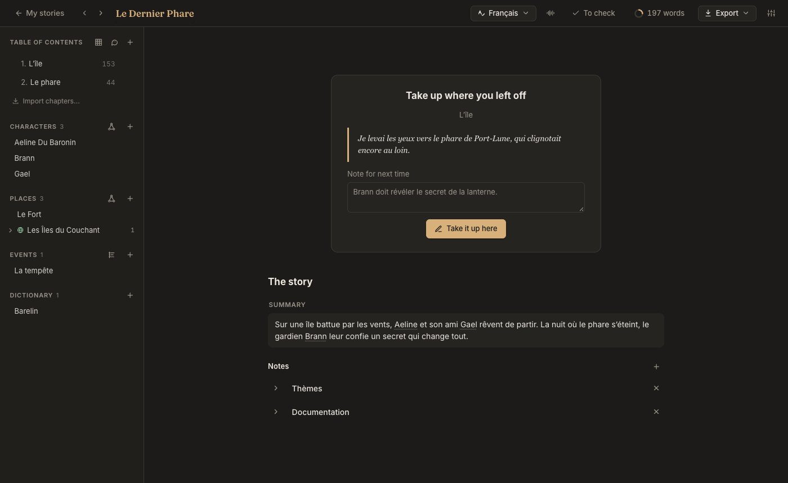
The home shows when the story opens, and whenever its title is clicked in the header.
Take up where you left off recalls the chapter written last and the sentence where the cursor stood. The note for next time keeps the idea not to lose ("Brann must reveal the secret of the lantern"); it is written on the card or in the menu of the daily goal. Take it up here reopens the chapter at that very place: the cursor goes back into the sentence, the passage is centred and shines for a moment. Each chapter also reopens where its cursor was left.
The story gathers what holds for the whole story:
- the summary: what the story is about, where it starts, the characters, what is at stake, the end; the names of the story are recognised in it and the spell checker goes over it;
- the notes of the story: themes, ideas, research… each with a title used as its summary.
They are saved with the story at every pause, and follow a character renamed everywhere.
3. Writing a chapter
The table of contents
At the top of the left panel, each chapter shows its number, its title and its word count.
- + adds a chapter at the end.
- Drag and drop a chapter (by the handle that shows on hover) to reorder.
- The bin on hover deletes the chapter.
- Import chapters… adds those of a
.txtor.mdfile, cut at its headings ("Chapitre 3", "CHAPTER ONE", "IV.", Markdown#headings…). - The two buttons of the header open Presence (the grid) and Who speaks? (the speech bubble).
The chapter plan
Above the text, the chapter plan (it folds) holds:
- What this chapter will contain: the scenes, what must happen, what the reader must learn.
- Events told: the events this chapter tells, chosen in Add an event… (in the order they happen, with their "When") or created with New event. The timeline places them in this chapter; the × removes one.
- Notes: notes with a title used as their summary.
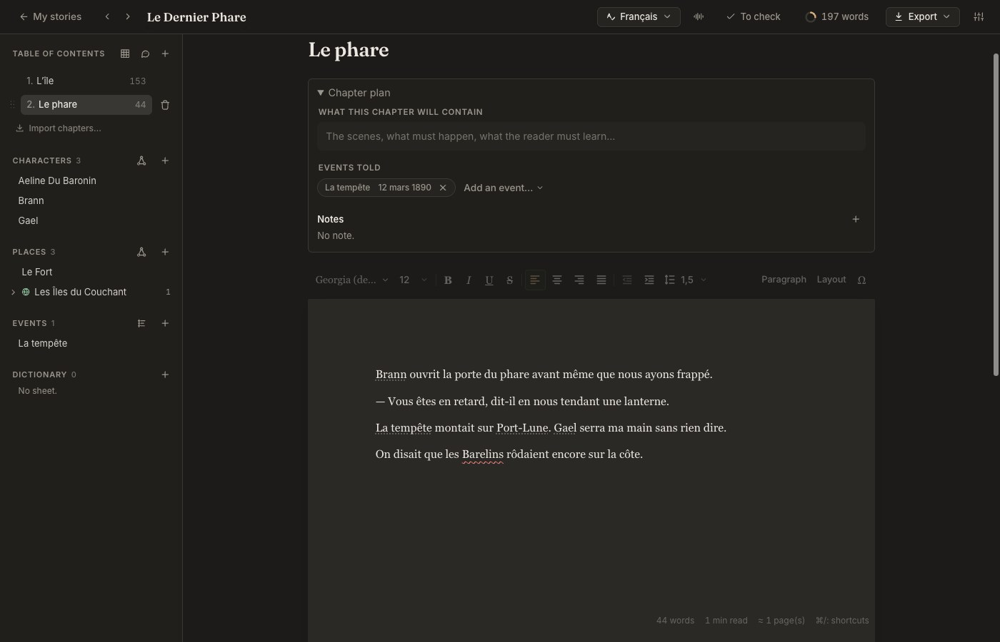
The editor
The text is written on a sheet, saved automatically at every pause (Cmd/Ctrl+S saves at once). Under the page, a discreet status line gives the words of the chapter, the reading time, the number of printed pages (about 250 words a page) and, during a selection, its words. It also recalls the shortcut of the help: ⌘/ (Ctrl+/ on Windows and Linux).
A click in the margin of the sheet puts the cursor on the line clicked: at the start of the line in the left margin, at its end in the right one.
The tools of the chapter, beside its title:
| Tool | What it does |
|---|---|
| History | The versions of the chapter, see History |
| Read | Reading mode, see Reading mode |
| Proofread | Proofreading mode (the number of issues in a badge), see Proofreading |
| Listen | Reading aloud, see Listen |
| 👤 | A voice per character when listening (on or off) |
| Style | The style lens, see Style lens |
| Focus | Focus mode, see Focus mode |
Splitting a chapter
Put the cursor where the new chapter must start, then Paragraph › Split the chapter here: the text that follows becomes a new chapter, right after, which opens. Each keeps the split in its history.
4. Formatting
The formatting bar sits above the page, discreet until hovered. A bubble also shows over a selection (bold, italic, note in the margin, clear the formatting…), and the usual shortcuts work: Cmd/Ctrl+B, I, U, Cmd/Ctrl+Shift+L, E, R, J to align.
From left to right: the font, the size, bold, italic, underline, strikethrough, the four alignments, decrease and increase indent, the line height, then Paragraph, Layout and Ω (special characters).
Fonts
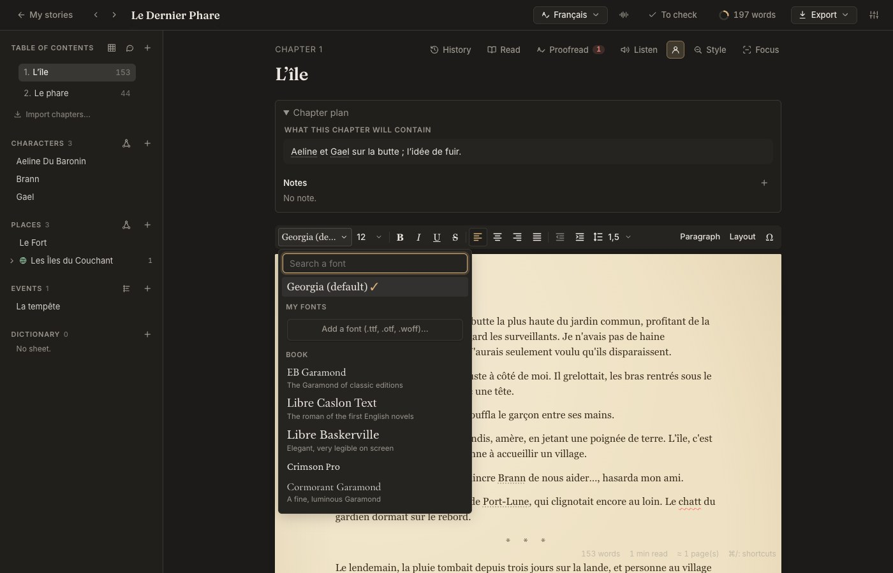
Each font is drawn in itself, with a word on what it is for, and a search at the top of the list. Twenty fonts are shipped with Storoff, grouped by family:
- Book: EB Garamond, Libre Caslon, Libre Baskerville, Crimson Pro, Cormorant Garamond, Vollkorn, Literata, Lora, Spectral, Alegreya, Gentium;
- Screen and legibility: iA Writer Quattro and Duo, Atkinson Hyperlegible, OpenDyslexic;
- Typewriter: Courier Prime, Special Elite, iA Writer Mono;
- Character: Playfair Display, Caveat;
- then the usual system fonts.
Show the fonts of this computer adds every installed one. Add a font (.ttf, .otf, .woff)… imports your own files, listed under "My fonts" and available in every story (and in the PDF of the book); × removes one.
Paragraph
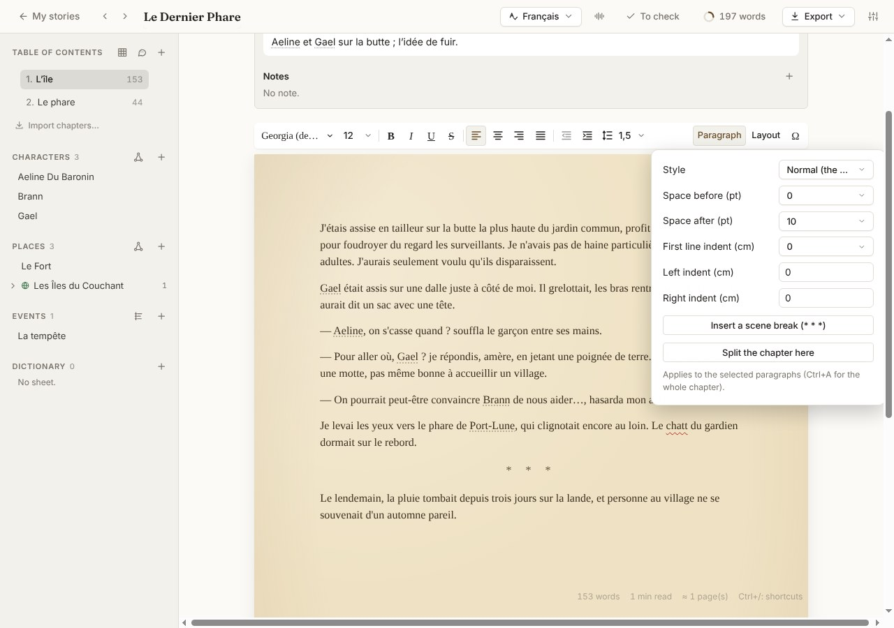
- Style: Normal (the manuscript's), Quotation, Letter, Verse, Centred, Epigraph; each style sets indents, spacing and alignment at once.
- Space before / after, first-line indent, left and right indents.
- Insert a scene break (* * *): a line holding only
* * *,#,⁂or~is a scene break, centred and spaced; the book prints it as an ornament. - Split the chapter here, see above.
The settings apply to the selected paragraphs (⌘A for the whole chapter). The popover stays open while the values change, to compare before and after.
Layout
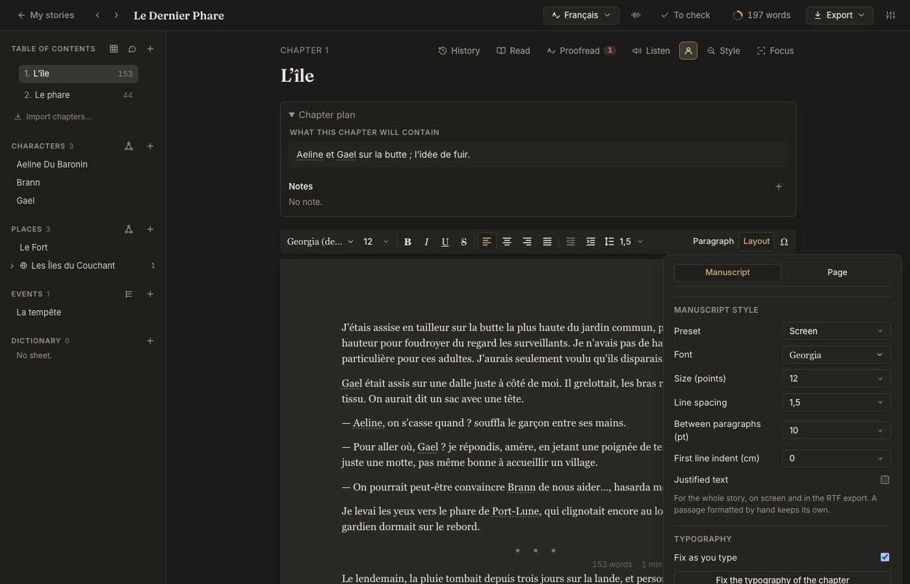
The Manuscript tab sets the style of the whole story at once: font, size, line height, space between paragraphs, first-line indent, justified text. Ready-made presets: Screen (the default), Novel, Submission manuscript, Typewriter, Comfortable reading, High legibility, Dyslexia, Notebook. A passage formatted by hand keeps its own formatting. The RTF export uses this style.
The Typography section turns automatic typography on or off (see below) and can fix the typography of the chapter in one step (⌘Z to undo).
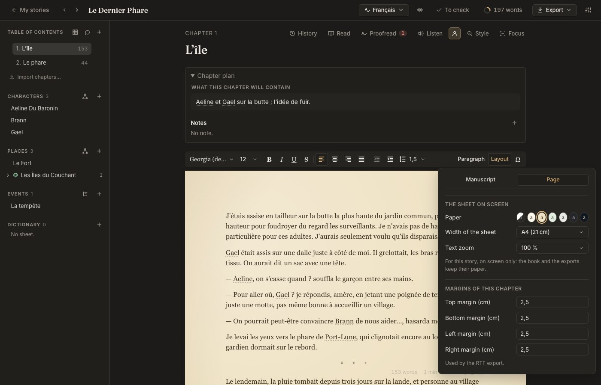
The Page tab sets the sheet on screen: the paper (the theme's, Ivory, Parchment, Sage, Soft grey, Night, Ink), the width of the sheet (narrow, A4, wide, full width), the text zoom (80 to 150 %) and the margins of the chapter. These choices are for the screen: the book and the exports keep their own paper.
Special characters
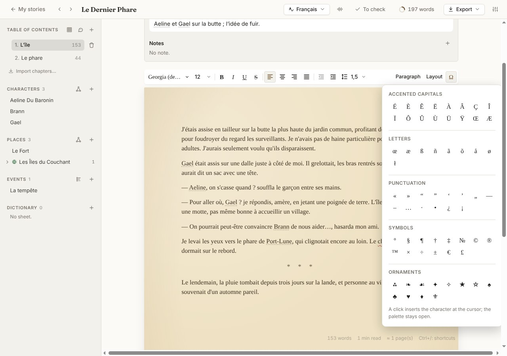
Ω opens a palette by family: accented capitals (É À Ç Œ…), letters (œ æ ß ñ…), punctuation (« » “ ” — … ¿ ¡), symbols (° § № €…) and ornaments (⁂ ❧ ✦…). A click inserts the character at the cursor.
Automatic typography
While typing, in French: « guillemets » with their non-breaking spaces, the narrow non-breaking space before
; ! ?, the non-breaking space before :, the typographic apostrophe ’. In English, curly quotes. In every
language: a hyphen at the start of a line becomes a dialogue dash (—), -- gives an em dash too, ... an
ellipsis (…). Backspace right after gives back what was typed.
5. The names of the story
Storoff knows the names of your sheets: characters, places, events, dictionary words, with their other names.
Autocompletion
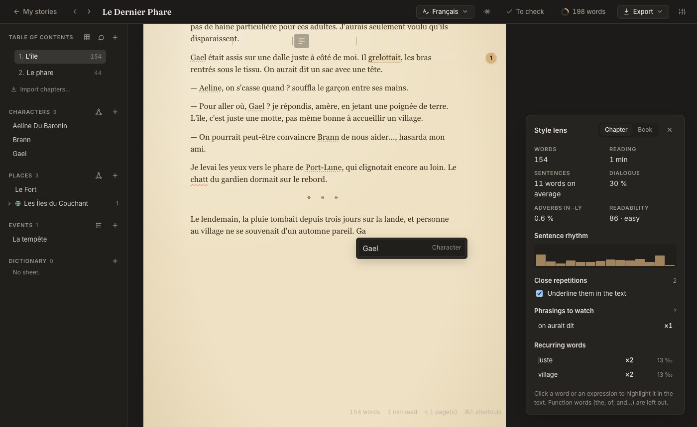
From the first letters of a name, a suggestion offers to complete it (Enter or Tab).
Anchors to the sheets
Recognised names are underlined with a discreet dotted line: Cmd/Ctrl+click opens their sheet in the side panel. Places and dictionary words are also recognised in lowercase ("la cantine"); first names are not ("une rose" is not "Rose").
A character with a compound name ("Aeline Du Baronin") is also recognised by their first name alone and by their family name, with or without its particle, as long as no other sheet bears it. A word of a name is never a spelling mistake ("Les Baronin sont ignobles").
Creating a sheet from the text
A right click on a word (or a selection) offers to create the character or the place without leaving the text. The sheet carries a "to complete" badge until you mark it as completed.
Renaming everywhere
When the new name of a character or a place is settled on its sheet, it replaces the old one in the whole story: the text of the chapters (dialogue included), their titles, plans and notes, the other sheets, and the summary and notes of the story. Whole words only, with the case of each occurrence (AELINE → ILONA) and the French elisions corrected ("d'Aeline" → "de Brann"). A notice says where the name changed, and Undo in the text gives the texts back.
6. Correcting
The spell checker
Mistakes are underlined in red while typing. The language is chosen in the header; French is shipped, other languages are added in the settings.
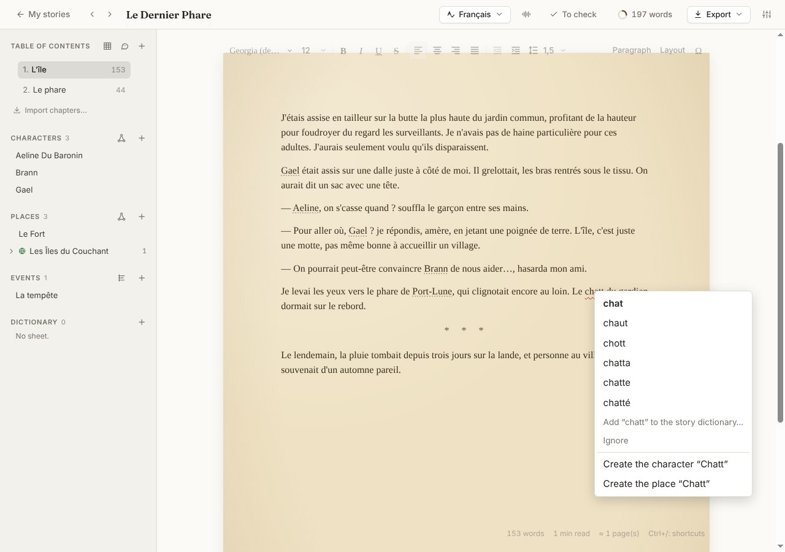
A right click on an underlined word gathers everything in one place: the suggested corrections, add to the story dictionary (with a definition; its agreements and conjugations are then recognised), ignore, the grammar issue if any, the synonyms and the sheet to create.
The grammar checker
Optional, it is installed from the settings (desktop app): LanguageTool, which runs on your computer (the text never leaves Storoff), underlines in blue agreements, missing words, punctuation… The last word of a sentence being written is not underlined.
Dialogue dashes typed as hyphens are underlined, with "Replace the dialogue hyphens of the chapter".
Proofreading mode
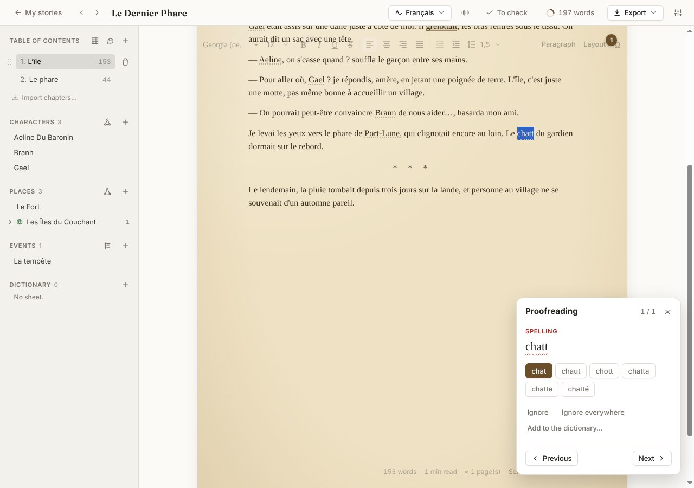
Proofread (or F7) goes through every issue of the chapter, one by one: the card shows the word, the corrections in one click, ignore, ignore everywhere, add to the dictionary. F8 and Shift+F8 go to the next or previous issue.
7. Reading over and reworking
Synonyms
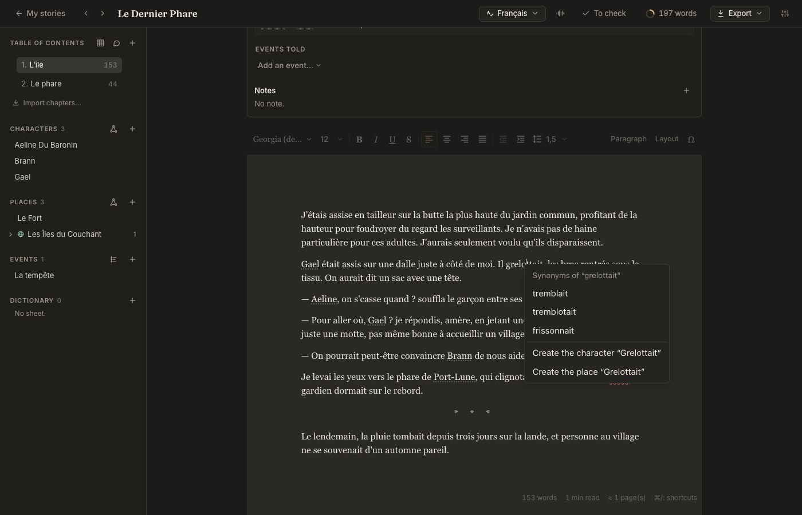
A right click on a word offers its synonyms, already in the form of the word: a verb is conjugated like it ("grelottait" → "tremblait, frissonnait"), a noun or an adjective agrees ("belles" → "jolies"), and the article before it changes when needed ("le ciel" → "l'azur"). A click replaces the word; All the synonyms… shows the whole list, meaning by meaning.
Storoff reads the tense and the person from the words around (je, il, an auxiliary, "que", the tense of the paragraph) and only keeps the forms the dictionary knows. For a noun, check the article: a synonym does not always have the same gender. The French thesaurus comes from LibreOffice (Dicollecte, LGPL licence) and works offline; the other languages have no synonyms yet.
Find and replace
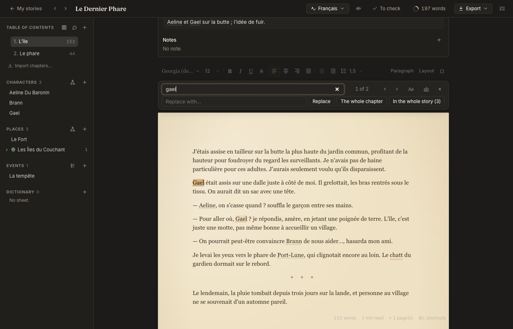
Cmd/Ctrl+F opens a bar above the page, with the selected text as the search. Accents are ignored ("ete" finds "Été"); case (Aa) and whole words (ab) on request. Every match is highlighted, "1 of 2", Enter and Shift+Enter go through them.
- Replace replaces the current match and goes to the next.
- The whole chapter replaces in one step (⌘Z undoes it).
- In the whole story (3) replaces in every chapter (each keeps the former version in its history).
The replacement takes the case of what it replaces ("Été" → "Hiver").
Notes in the margin
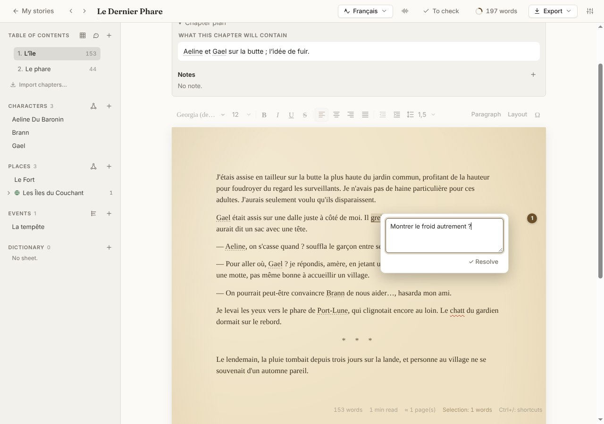
Select a passage, then ✎ Note in the bubble: the passage is softly highlighted, a numbered marker stands in the right margin at its line and the card of the note opens for typing. A click on the passage or the marker opens it again; Resolve removes the note and keeps the passage. Notes stay out of the exports, and To check gathers the ones still open.
Reading mode
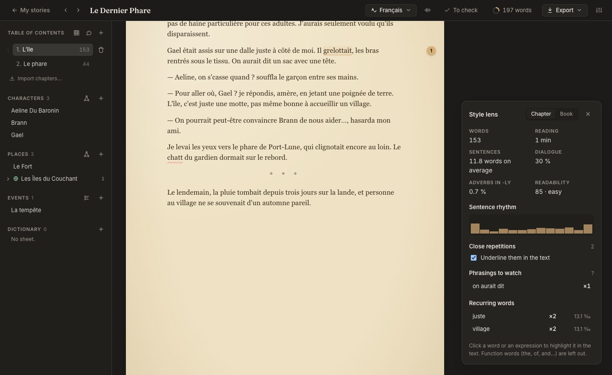
Read takes away the formatting bar and the underlining of names: the text reads like a page of a book (holding Cmd/Ctrl brings the anchors back). Write goes back to writing.
The style lens
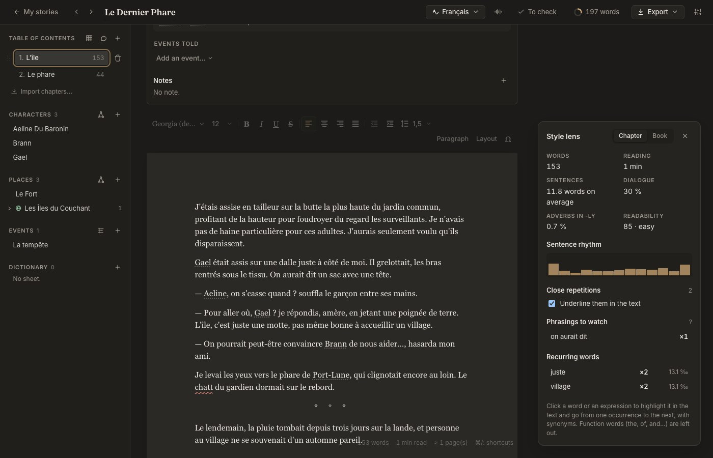
Style (or F9) opens a panel beside the page, for the chapter or the whole book:
- the figures: words, reading time, average sentence length, share of dialogue, adverbs, readability;
- the sentence rhythm in bars (long ones in orange);
- close repetitions, underlined with orange dots in the text;
- phrasings to watch (there was, began to, suddenly, as if…);
- words that come back and repeated expressions;
- names to check (a word one letter away from a name of the story).
A click on a word or an expression highlights it everywhere in the text and starts its review, like proofreading mode: the panel shows the current occurrence ("1 / 7") and its synonyms in its form (a click replaces it, and the next occurrence takes its place); Previous and Next go from one occurrence to another.
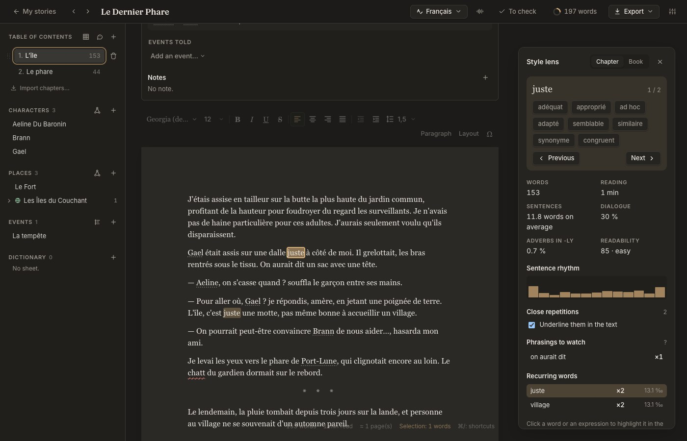
Listening to the text
Listen reads the chapter aloud with a voice of the computer, sentence after sentence from the cursor; the sentence being read is selected. With the 👤 icon on, each character has their own voice: the narration keeps the usual voice, the lines take the other voices of the computer (higher for "dit-elle", lower for "dit-il").
8. Writing comfort
Focus mode
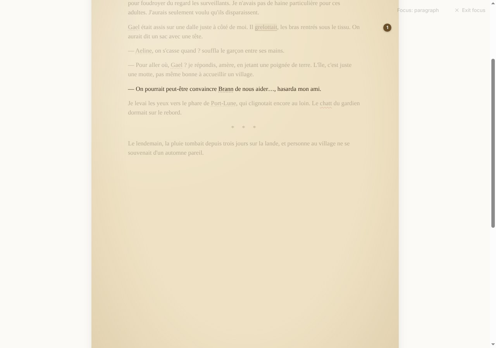
Focus (or Cmd/Ctrl+Shift+F) goes full screen: only the page remains, the other paragraphs fade and the current line stays centred. Focus: paragraph / sentence chooses what stays bright; by sentence, only the sentence being written stays sharp. Esc or Exit focus leaves it.
Daily goal and sprints
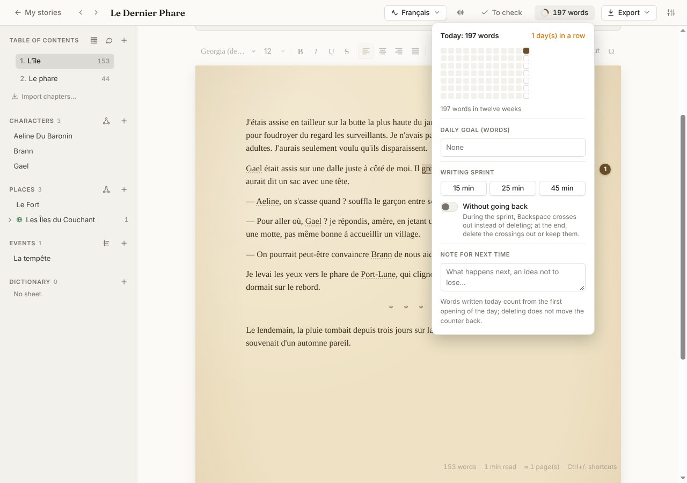
The ring of the header fills toward your daily goal (the words written today; deleting does not move the count back). Its menu shows:
- the calendar of the last twelve weeks, a square per day, brighter as the day nears the goal, and the days in a row;
- the daily goal in words;
- writing sprints of 15, 25 or 45 minutes (time left and words written in the header);
- Without going back: during the sprint, nothing is deleted. Backspace crosses out instead of erasing, as on paper; at the end, you delete the crossings out or keep them;
- the note for next time, the same as on the "Take up" card.
Ambience and typewriter
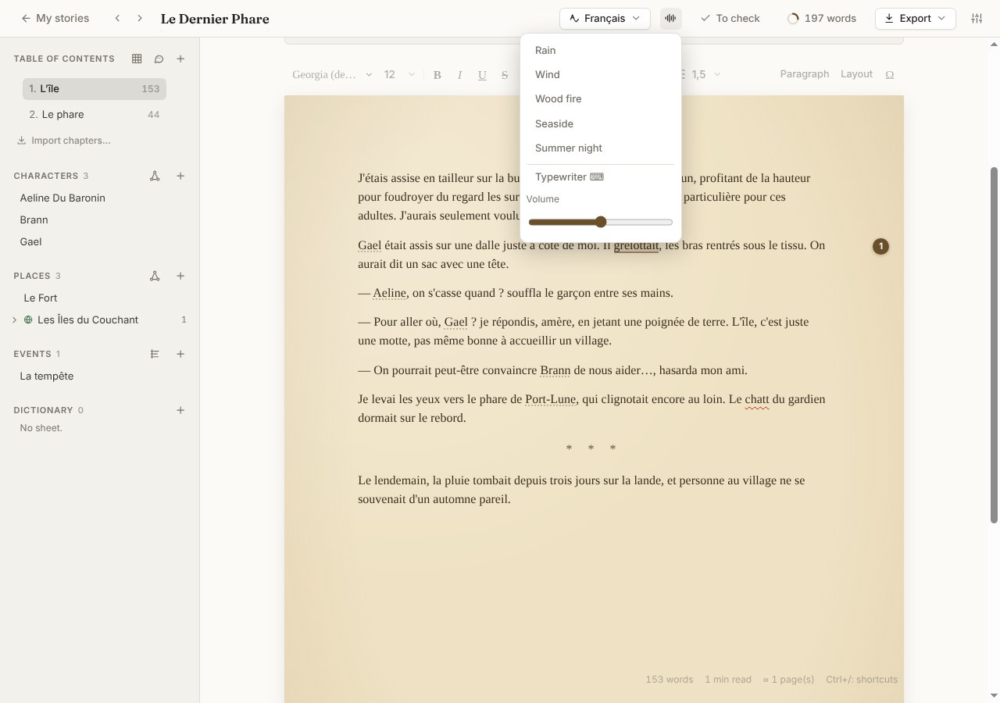
The ambience menu plays rain, wind, a wood fire, the seaside or a summer night, made on the fly (nothing to download), with a volume. Typewriter ⌨ makes each key typed in the manuscript strike like a real typewriter, with the bell at the end of a line. The sound follows the writer from a chapter to a sheet and stops when the story closes.
Keyboard shortcuts
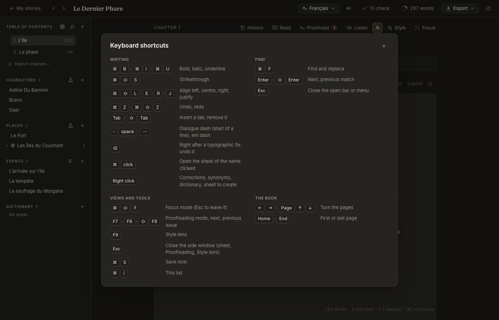
Cmd/Ctrl+/ opens the list of every shortcut, by family. See also Keyboard shortcuts.
9. Sheets
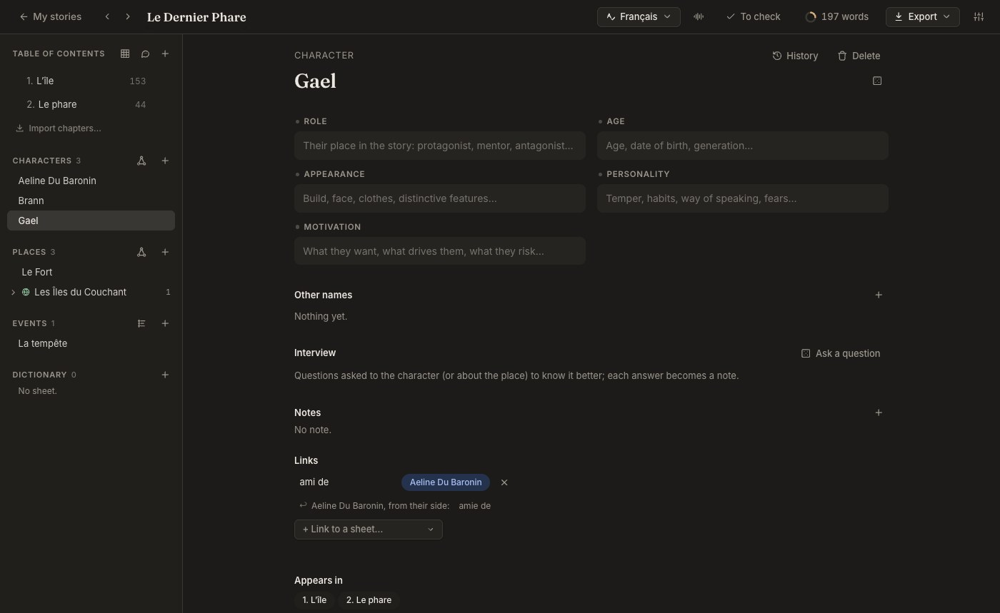
Four kinds of sheets, each in its section of the left panel:
- Characters: fields (role, age, appearance, personality, motivation…), each in its own box; they can be added, renamed and removed.
- Places: a description, and possibly a map.
- Events: a title, a free "When" ("year 302", "12 mars 1890", "day 3"…), a description.
- Dictionary: the invented words of the story, see below.
On every sheet:
- Other names: nicknames and titles ("Ael'"), recognised in the text; for a character, with the characters who use them.
- Interview (characters and places): Ask a question draws a question among those not answered yet ("What smell takes you back to childhood?"); Keep the answer turns it into a note.
- Notes: notes with a title.
- Links: "ami de" [Aeline], with the name of the link seen from the other side ("amie de"). A link shows and can be edited on both sheets; two sheets share one link at most.
- Appears in: the chapters that mention the sheet, computed automatically; a click opens the chapter.
- The die beside the name (characters and places) offers eight names in the style of the story.
- History and Delete at the top right. Deleting a place that holds others (the territories of a world, the buildings of a territory…) offers to delete them too.
Portrait and sketches
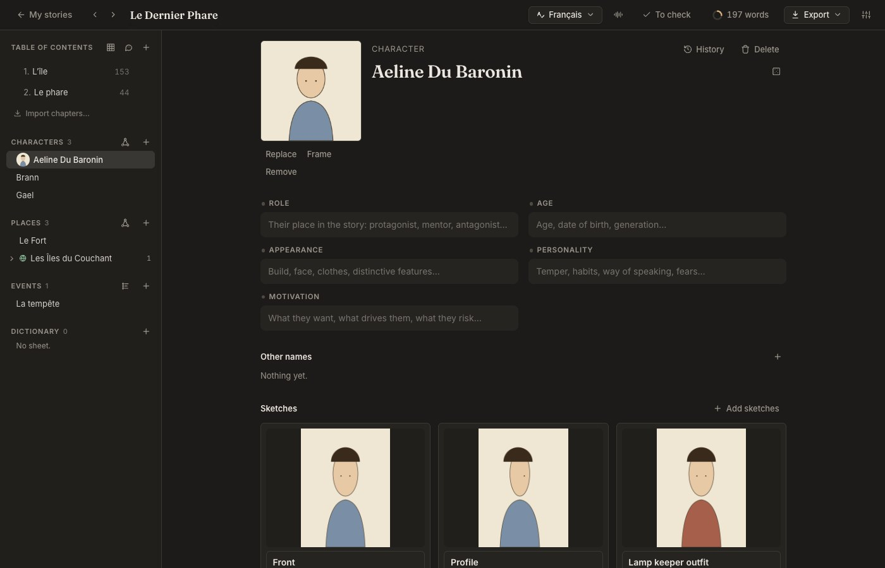
For the artists who work with the author, the sheets of characters and places keep images (PNG, JPEG or WebP, 25 MB at most each):
- Portrait ("Illustration" for a place): beside the name. Add a portrait opens a file, or drop an image on the frame. Replace and Remove change or take away the image; Frame lets you drag the image to choose the part visible in the square frame. The portrait also shows as a small thumbnail in the list on the left.
- Sketches: reference sketches (front, profile, outfits, expressions…), with Add sketches (one or several files, or drag and drop). Each sketch has a title, a view (front, profile, back, three-quarter, expression, outfit, accessory, other) and a note (colors, proportions, distinctive marks). The Move before and Move after arrows reorder them.
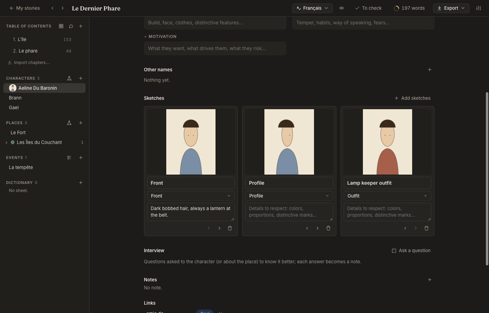
A click on a sketch enlarges it: the wheel or the + and − buttons zoom, dragging moves the image, the arrow keys go from one sketch to the other.
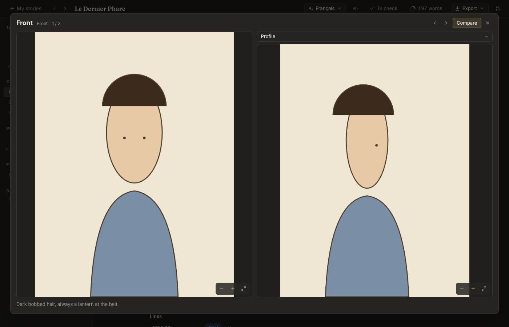
Compare shows a second sketch beside the first (chosen in the Compare with list), each with its own zoom.
Images are saved with the story (images/ folder), copied with it and included in a .storoff file. The
history keeps the description of the images (titles, notes, order), not the images themselves: a deleted
sketch does not come back with an older version of the sheet.
The story dictionary
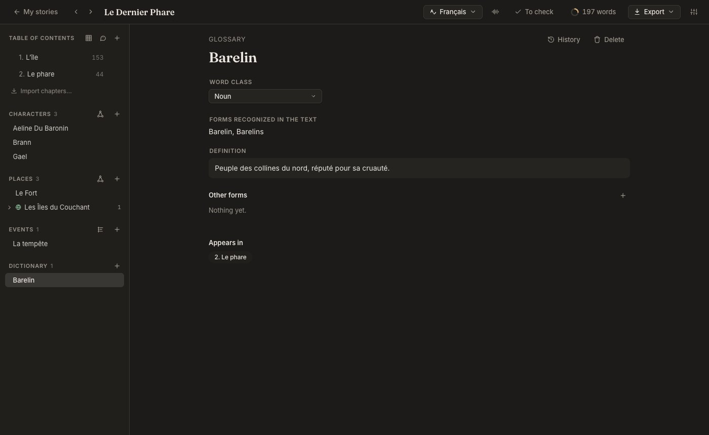
A dictionary word has a word class (noun, adjective, verb in -er, in -ir, invariable) and a definition. Storoff derives the forms recognized in the text (here "Barelin, Barelins"): the plural, the feminine, the conjugations are no longer mistakes. Other forms can be added by hand.
10. Overviews
Who speaks?
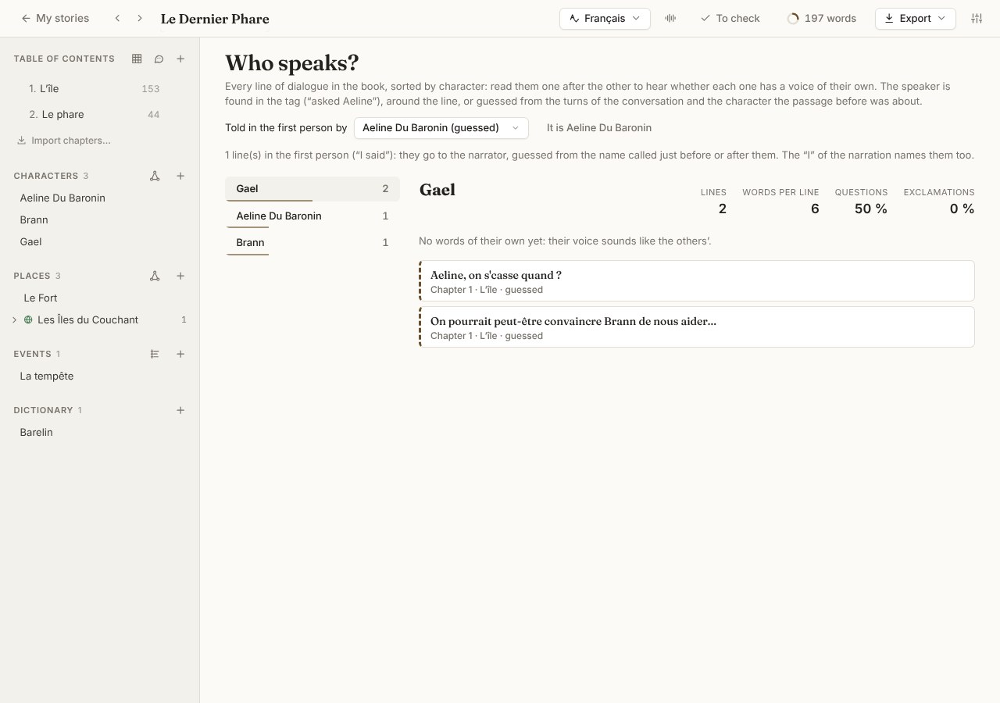
The speech bubble of the table of contents sorts every line of dialogue of the book by character, to read each voice one line after the other. The speaker is found in the tag ("demanda Aeline"), around the line, or guessed from the turns of the conversation and the character the passage before was about; a guessed line has a dashed edge.
- For each one: number of lines, words per line, share of questions and exclamations, their expressions and the words that are theirs.
- Told in the first person by: in a story told as "I", the narrator is guessed (the "répondis-je" lines go to them); confirm it or choose another one.
- Unclear speaker gathers the lines nobody can tell who says: a tag to add.
A click on a line opens its chapter, the line highlighted.
Presence and relations
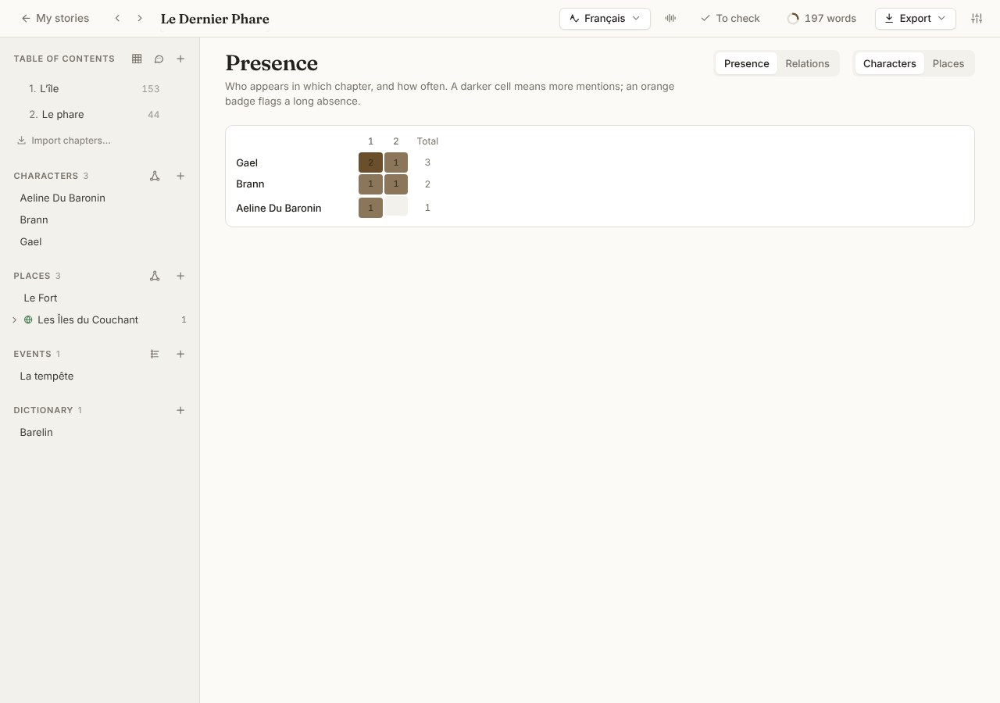
The grid of the table of contents crosses the characters (or the places) with the chapters: a darker cell means more mentions; an orange badge flags a long absence. A click on a cell opens the chapter. Relations lays the sheets out as a graph: links written on the sheets in gold, chapters shared in grey.
Map of links
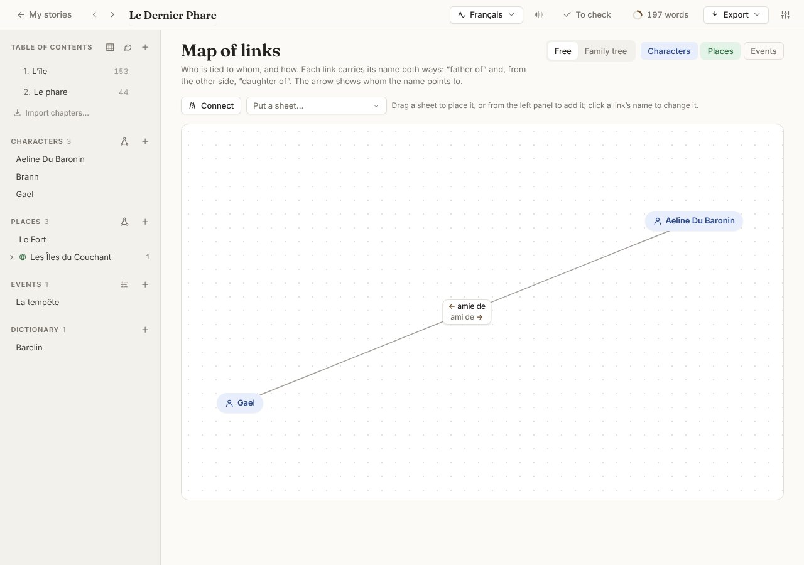
The button beside the + of the characters or the places opens the map of links: each link written on its line in both directions, an arrow toward the sheet it names.
- Drag a sheet to place it; it stays where you drop it. Put a sheet… adds one.
- Connect: drag from one sheet to another to create a link.
- Family tree sorts the generations from the family links.
- The Characters, Places, Events filters choose the sheets shown.
Timeline
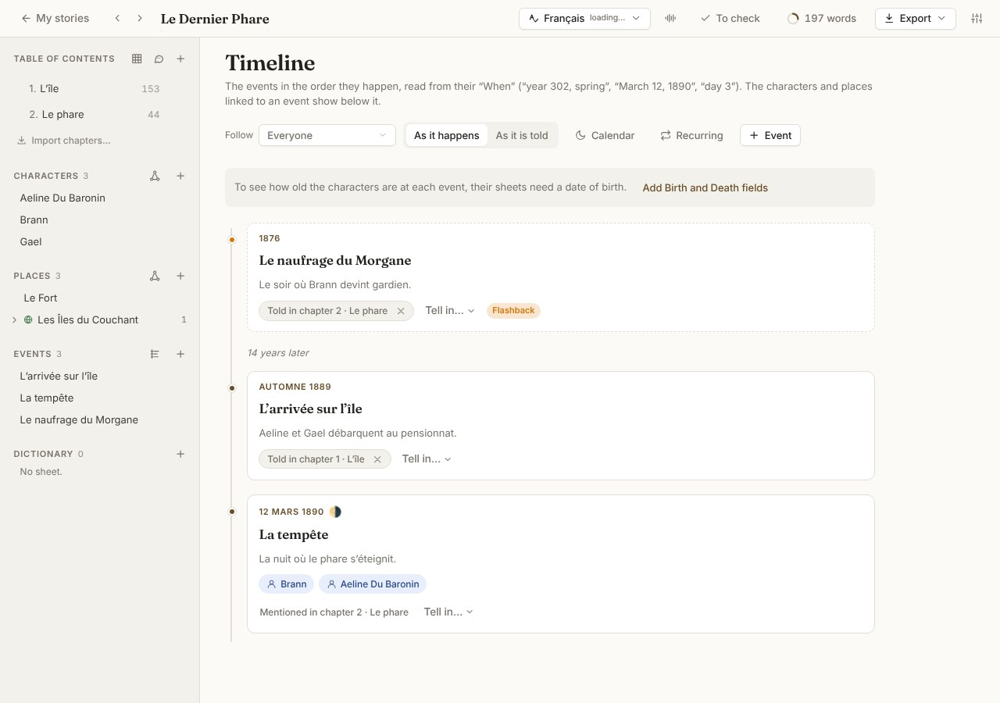
The button beside the + of the events opens the timeline: the events in the order they happen, read from their "When", with "13 years later" between them, the characters and places linked, and the chapters that tell them.
Tell in… says which chapter tells an event (the same as in the chapter plan); several chapters can tell it, a prologue and a memory for instance, and the × removes one. With no chapter chosen, the timeline takes the first one that writes its title ("Mentioned in chapter 2").
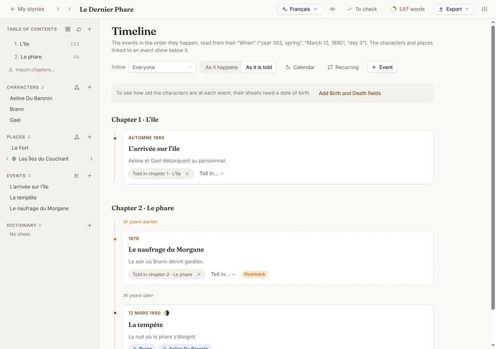
As it is told shows the book chapter by chapter, with the jump in time between two events told one after the other: "14 years earlier", in orange, when the book goes back. Enough to build a story that plays with time without getting lost; flashbacks are flagged.
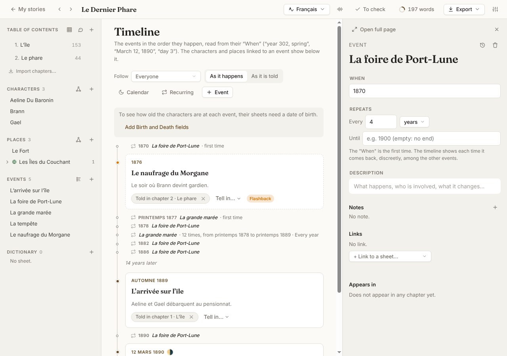
Recurring creates an event that comes back regularly: a festival, a tide, a comet. In its sheet, Repeats says Every how many years, months or days, and Until when (empty: no end); its "When" is the first time. As long as the timeline has dated events, each time it comes back slips in discreetly, a single line between the cards; beyond three times between two events, one line sums them up ("12 times, from spring 1878 to spring 1889").
- With a Birth field, each character has their age at each event; a character linked to an event before their birth or after their death is flagged.
- Follow a single character.
- Calendar: the real calendar (with the real phase of the Moon 🌗) or an invented one, with its months and its moons.
To check
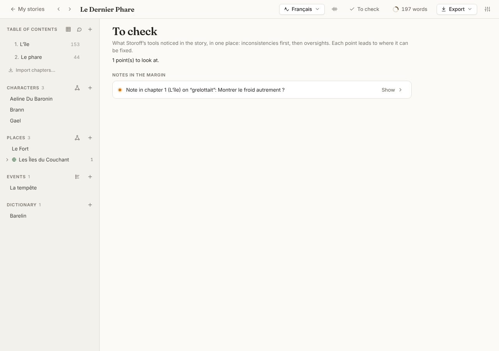
To check, in the header, gathers what the tools noticed, inconsistencies first: open notes in the margin, a character linked to an event after their death, a word that looks like a misspelled name, a character missing for a long time, a sheet to complete, a line without a clear speaker, an unreadable date, a link without a name, an empty chapter. Show leads to the place to fix.
11. Maps
A place can become a map: on its sheet, Create a map…, then the kind, which is final:
- World: a planet, as a 3D globe or a world map;
- Territory: a city, a forest, an island… in 3D or seen from above, set on a world;
- Building: in 3D or seen from above, set on a territory.
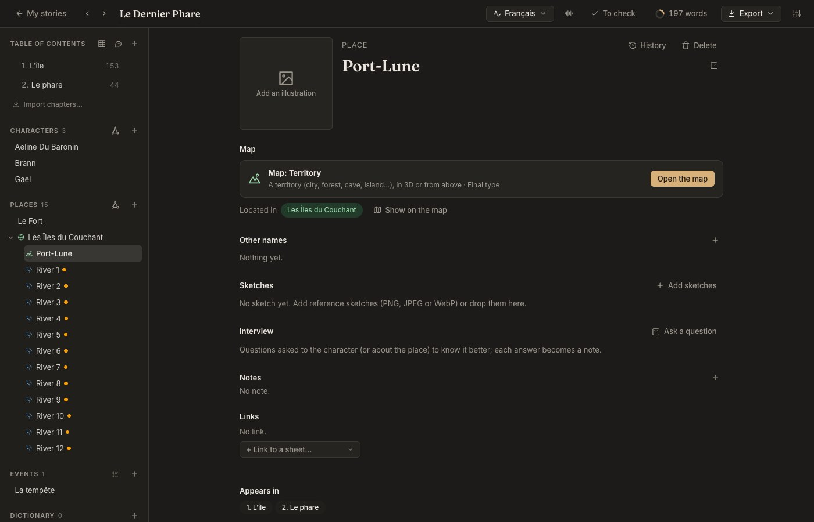
The sheet of a place that is a map shows its kind (final), the place that holds it and Open the map.
The world
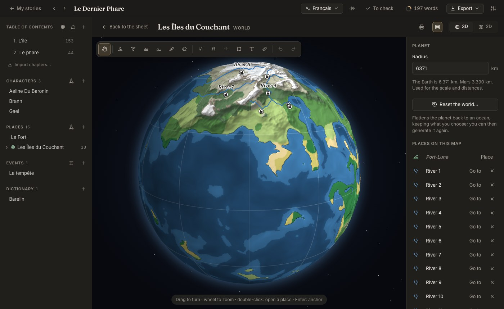
A new planet is an ocean. Generate the planet makes continents, relief and rivers from the settings (oceans, continents, relief, rivers, seed); Reset the world… flattens it again, keeping what you choose. The tools, at the top left:
- Navigate (H); Raise, Lower, Flatten, Smooth the terrain with a brush;
- Paint a biome (forest, desert, tundra…) or give back the automatic biome;
- draw a river, a road, a border, a region (a nation, a province);
- put a place or a territory, write a name on the map (a place to complete is created);
- Measure a distance, with the travel times on foot, on horseback and by ship;
- undo and redo (Cmd/Ctrl+Z, Cmd/Ctrl+Shift+Z).
The places on this map are listed on the right; Go to brings the view there.
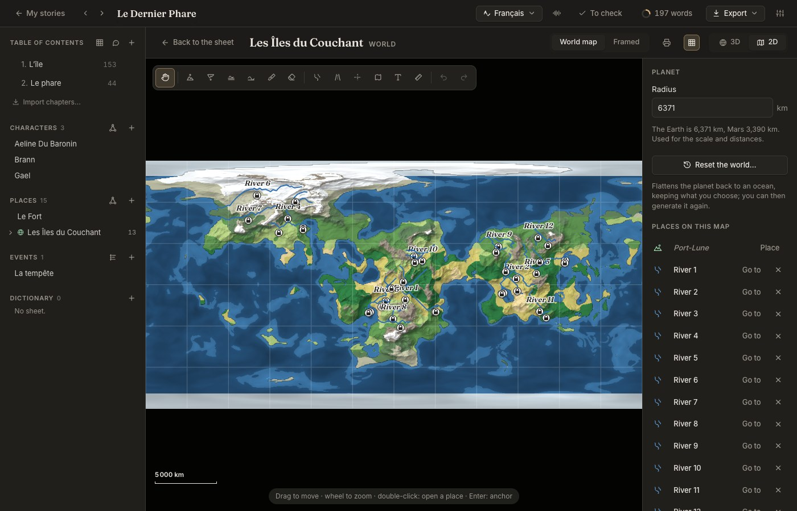
2D shows the world as a world map, or framed on a region. The print button prints the map.
Territories and buildings
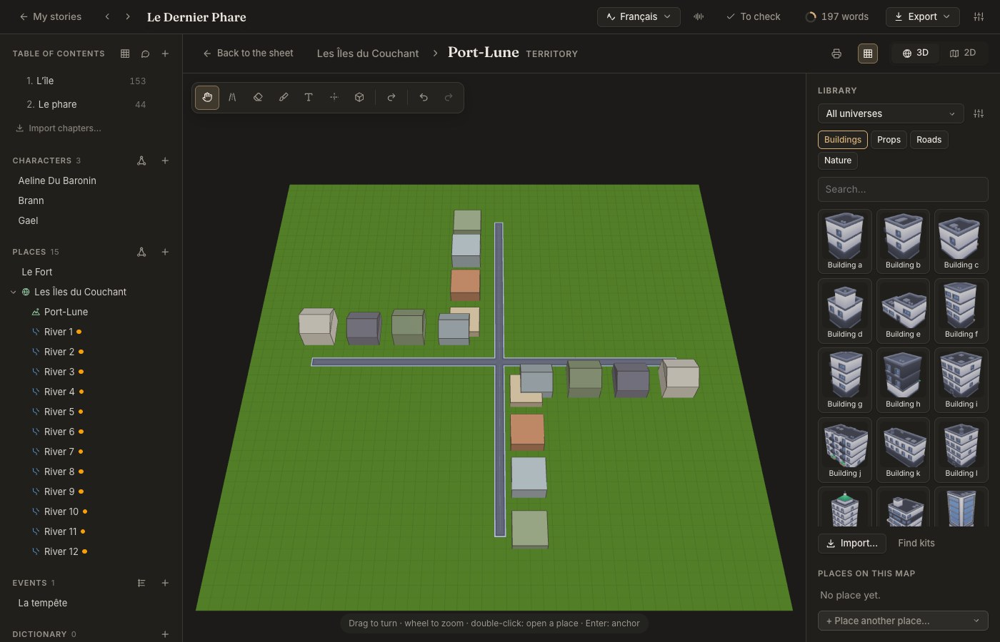
A territory is drawn from above or in 3D: paint the ground (grass, pavement, water, sand…), draw roads (bends and crossings place themselves), draw districts, sketch volumes, place 3D models. A building is built floor by floor: rooms (each becomes a place to complete), doors, windows, openings, furniture, with a cutaway view (C).
The library imports free model kits (CC0 licence) as they are, as .zip files.
12. History
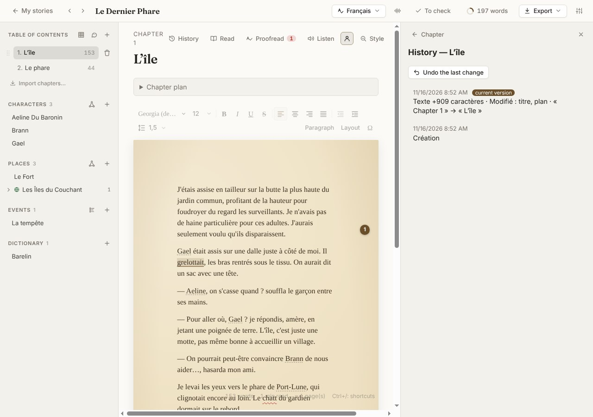
Every chapter and every sheet has its own history: History opens it in the side panel, each version with its date and what changed ("Text +909 characters · Changed: title, plan"). Undo the last change or Restore this version destroys nothing: the current state stays in the history. Cmd/Ctrl+S records a version at once.
13. The book and the exports
The book
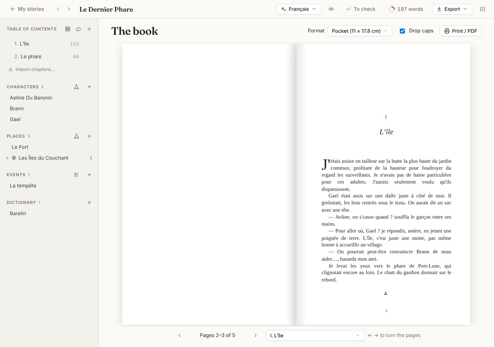
Export › See the book lays the manuscript out as a printed book, on a double page: pocket (11 × 17.8 cm), A5 or large format, in the font of the manuscript, justified with hyphenation. A title page opens the book; each chapter starts on a new page with its number, its title and a drop cap (it can be turned off); scene breaks become an ornament; running heads and page numbers. The arrows, Page Up/Down, Home and End turn the pages. Print / PDF prints the book or saves it as PDF, fonts included.
The exports
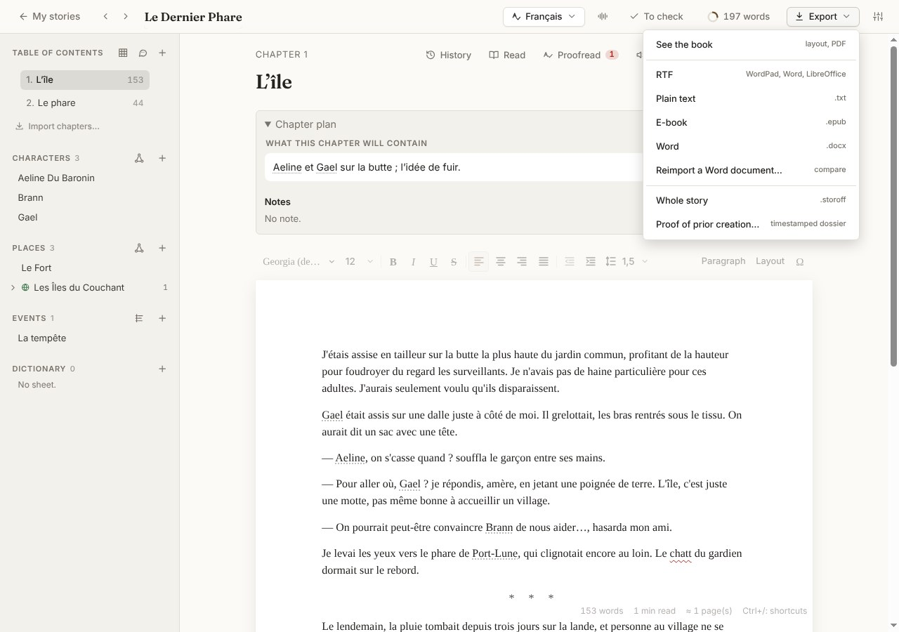
- RTF: for WordPad, Word or LibreOffice, with all the formatting and the style of the manuscript.
- Plain text (.txt).
- E-book (.epub): an EPUB 3 with its table of contents.
- Word document (.docx): one chapter per level-1 heading, with the margins, the formatting (bold, italics, underline, strikethrough, font and size) and the paragraph styles of Storoff (quotation, letter, verse, centred, epigraph), which Word shows by their names. The file comes back unchanged in Storoff with "Import a Word document…": each chapter keeps its id and its title, and the manuscript style is restored. Edited in Word, it still opens, but the styles named by Storoff must stay in place to be recognised.
- Reimport a Word document…: compares a Word document with the open story (see below).
- Whole story (.storoff): everything (chapters, sheets, maps), to reopen with "Import a story…"; the history is not included.
- Proof of prior creation…: a dated dossier proving that your text existed on that day (see below).
Prove that a text came first
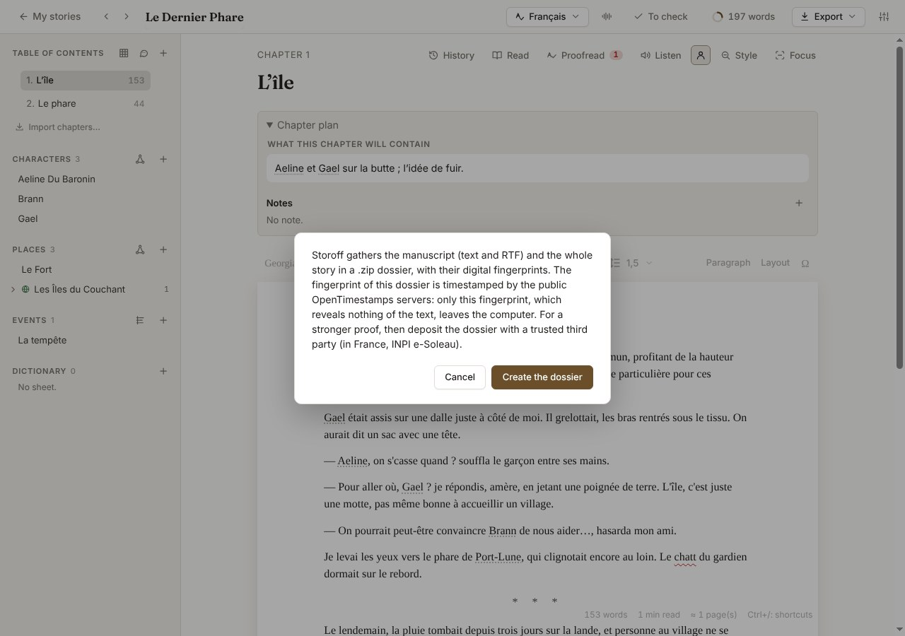
Your texts are protected by copyright as soon as they are created, without any registration. In case of plagiarism, though, you must prove you wrote them first: do it before sending a manuscript to a publisher, a contest or beta readers.
Export › Proof of prior creation… saves a .zip dossier with:
- the manuscript as plain text and RTF, and the whole story (.storoff);
empreintes-sha256.txt: the title, the date, the number of words, and the digital fingerprint of every file (changing a single letter changes the fingerprint);empreintes-sha256.txt.ots: the timestamp of that file by the public OpenTimestamps servers, anchored in the Bitcoin blockchain a few hours later. Only the fingerprint is sent: nothing of your text leaves the computer. Without a connection, the dossier is made without timestamp.
To check or complete the timestamp, drop the two files empreintes-sha256.txt and .ots on
opentimestamps.org. Keep the dossier as it is: a changed file no longer matches
its fingerprint. For a stronger proof, also deposit the dossier with a trusted third party: in France the
INPI e-Soleau, the SGDL, a notary or a bailiff.
Reimport a Word document
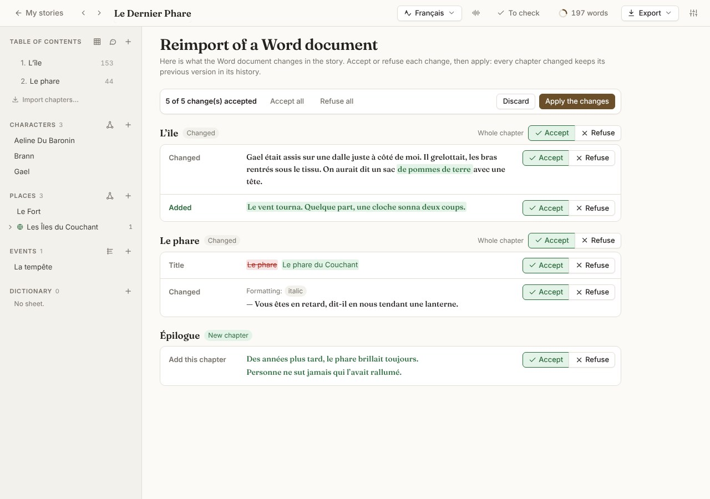
You exported the manuscript to Word, and you (or a proofreader) reworked it in Word. Export › Reimport a Word document… opens that document and shows what it changes in the story, before changing anything:
- Chapters are recognised even when moved, renamed or preceded by a new chapter (Storoff left an invisible mark on each heading), then by their title and their text for a document written elsewhere. A chapter only the document has is a New chapter; a chapter the document no longer has is Not in the document, and is deleted only if you accept (its history goes with it).
- Paragraphs that changed are compared word by word (removed text struck through in red, added text in green); those whose formatting alone changed say which (font, bold, italic, alignment, line spacing…). Paragraphs added or removed are shown as blocks.
- The story: its title, the Manuscript style (when the "Normal" style changed in Word) and the Order of the chapters.
Each change has its Accept and Refuse buttons; Whole chapter, Accept all and Refuse all decide for several at once. Apply the changes brings the accepted ones in: every chapter changed gets a new version in its history, its previous version stays there. Discard changes nothing.
What Word changes by itself (non-breaking spaces, typographic apostrophes) does not count as a change. Notes in the margin stay on the text the document kept. Chapters changed in Storoff after the export are flagged: accepting the document's version may undo those changes.
14. Settings and files
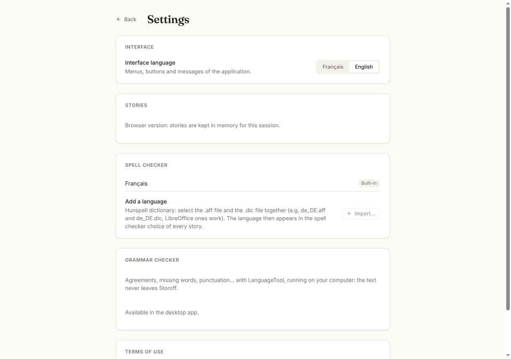
- Interface language: French or English, applied at once.
- Stories: the folder where they are kept (desktop app), which you can change and open.
- Spell checker: add a language by importing a Hunspell dictionary (the
.affand.dicfiles together; LibreOffice's work). - Grammar checker: install LanguageTool, which runs on your computer.
- Terms of use: the version accepted, and Read the terms of use to read them again.
Terms of use
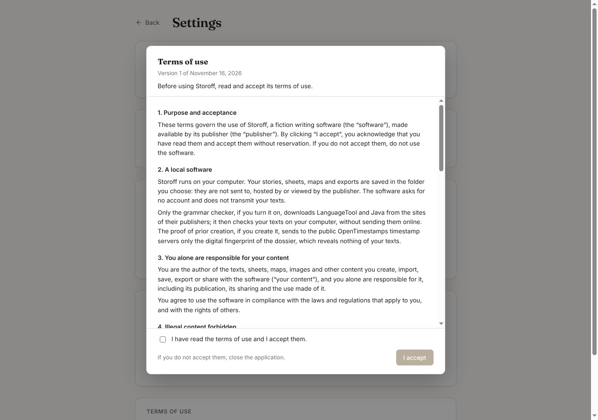
At the first start, Storoff presents its terms of use. Tick "I have read the terms of use and I accept them", then I accept. They say in particular that your stories stay on your computer, that the publisher has no access to them, and that you alone are responsible for the content you create: creating illegal content is forbidden. When they change, the new version is presented at the next start.
Where are the stories? In Documents/Storoff/ by default. Each story is a folder of readable JSON files:
story.json, a sub-folder per kind of sheet, and .history/ for the history. Nothing is sent over the
internet.
The browser version (for development) keeps the stories in memory for the session.
15. Keyboard shortcuts
⌘ on a Mac, Ctrl on Windows and Linux.
| Shortcut | Action |
|---|---|
| ⌘B · ⌘I · ⌘U | Bold, italic, underline |
| ⌘⇧S | Strikethrough |
| ⌘⇧L · E · R · J | Align left, centre, right, justify |
| ⌘Z · ⌘⇧Z | Undo, redo |
| Tab · ⇧Tab | Insert a tab, remove it |
- then space · -- |
Dialogue dash (start of a line), em dash |
| ⌫ right after a fix | Undo the typographic fix |
| ⌘ click on a name | Open its sheet |
| Right click | Corrections, synonyms, dictionary, sheet to create |
| ⌘F · Enter · ⇧Enter · Esc | Find, next match, previous, close |
| ⌘⇧F · Esc | Focus mode, leave it |
| F7 · F8 · ⇧F8 | Proofreading mode, next issue, previous |
| F9 | Style lens |
| Esc | Close the side window (sheet, Proofreading, Style lens) |
| ⌘S | Save now |
| ⌘/ | The list of shortcuts |
| ← → · Page Up/Down · Home · End | Turn the pages of the book |